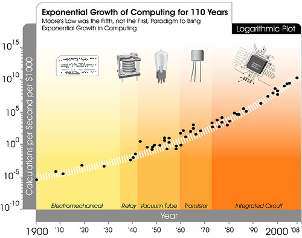

Etherialization and Moore's Law:
The number of transisters per chip will double every 18
months
Moore's Law describes trends in transistor density in integrated circuits. In the chart below, Moore's Law is extended to illustrate the increase in calculations per second per $1,000 between 1900 and 2000.
